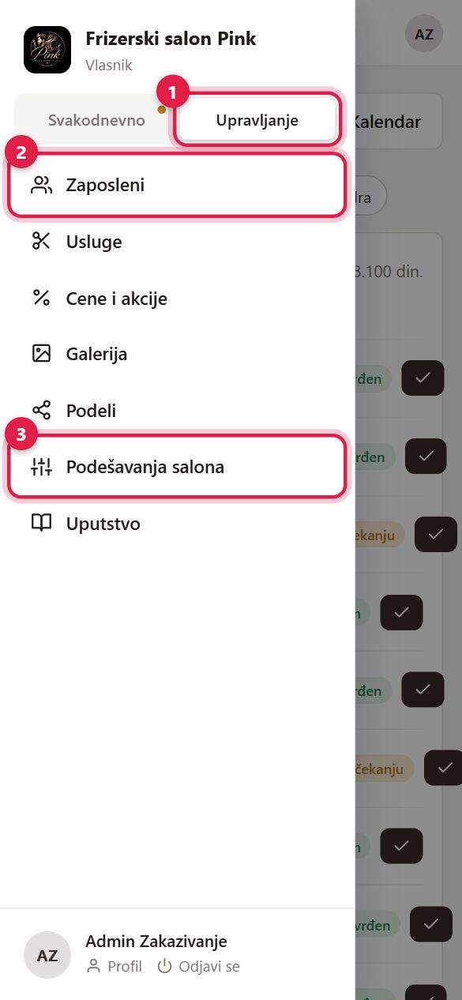
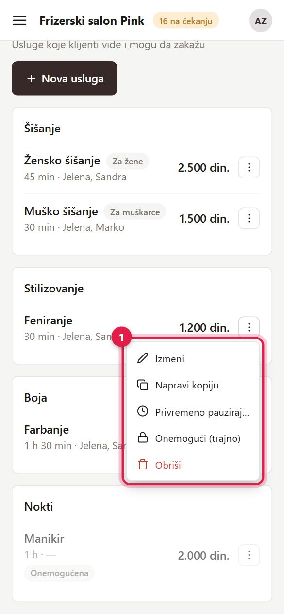
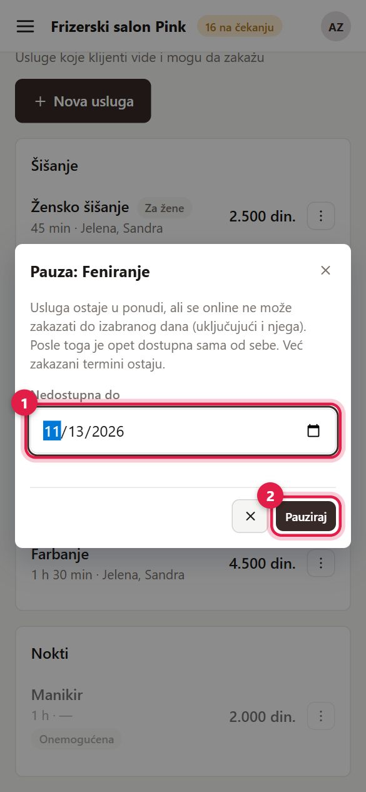
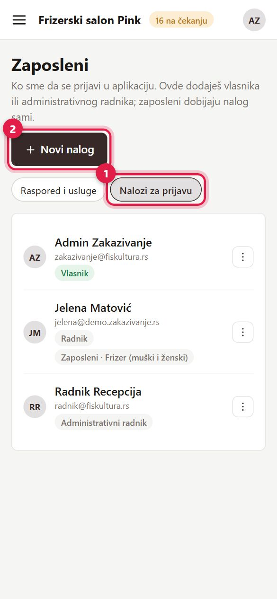
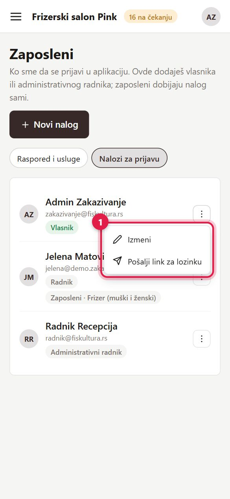
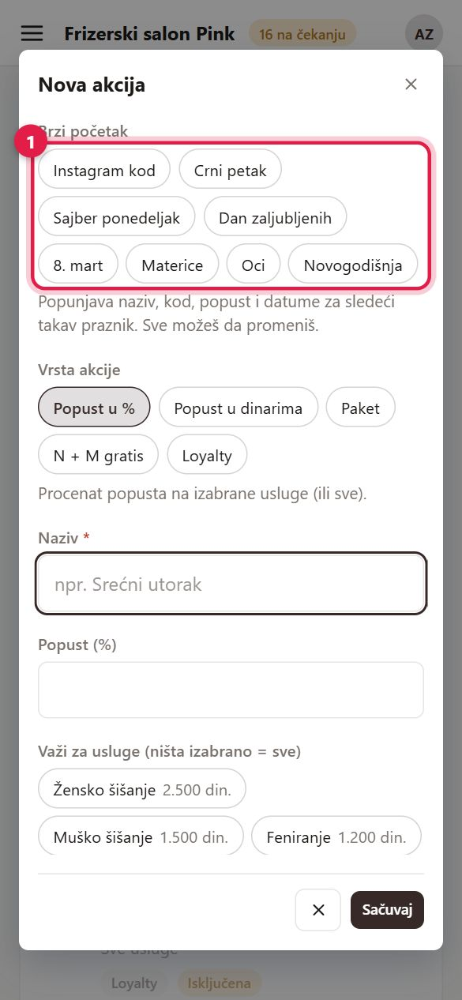
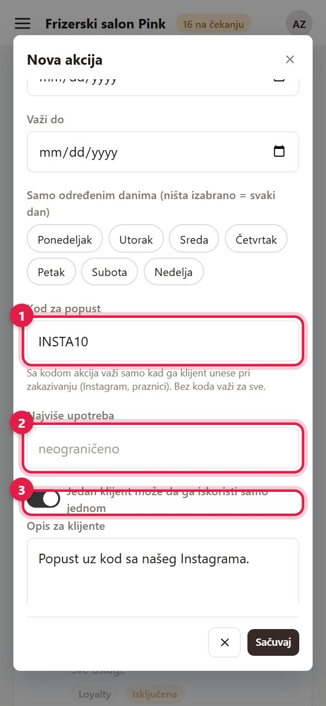
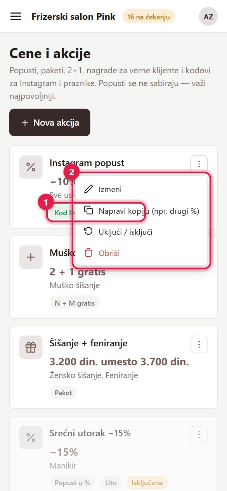
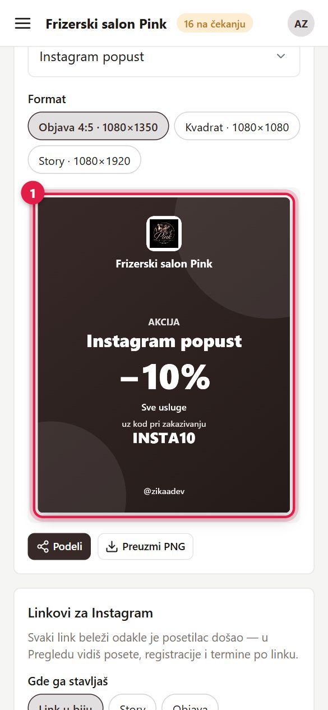

iVlasnik i administrativni radnik — razlike
Vlasnik vidi sve. Administrativni radnik je osoba od poverenja koja vodi salon umesto vas. On može:
- da uređuje zaposlene, usluge, cene i akcije, recenzije, galeriju i „Podeli";
- da pravi i menja naloge za prijavu (osim naloga vlasnika) i da menja podešavanja salona;
- da briše klijente i ručno im menja zonu.
Administrativni radnik ne može:
- da vidi finansijsku statistiku na Pregledu (zarada, popunjenost, odakle dolaze klijenti);
- da pravi, menja ili briše naloge vlasnika;
- da otvori izveštaje — on ih samo šalje vlasniku (mejlom ili WhatsApp-om) i ne dobija automatske izveštaje.
Ako radniku treba više od Pregleda, Kalendara, Termina i Beleški, dajte mu ulogu „Administrativni radnik".
1Prijavite se
- 1 Upišite email adresu.
- 2 Upišite lozinku.
- 3 Kliknite „Prijavi se".
- 4 Ako ne znate lozinku, kliknite „Zaboravljena lozinka?" — stiže vam link za novu.
Novi vlasnik ili administrativni radnik dobija mejl sa pozivnicom i sam postavlja lozinku (vidi Prijava i nalozi).
Otvori u aplikaciji
2Meni: Svakodnevno i Upravljanje
Na telefonu meni otvarate dugmetom sa tri crtice gore levo; na računaru je uvek vidljiv levo. Meni ima dva taba:
- 1 Svakodnevno — Pregled, Kalendar, Termini, Beleške, Klijenti, Recenzije i Izveštaji (vidi Svakodnevni rad).
- 2 Upravljanje — na drugoj slici: 2 Zaposleni, Usluge, Cene i akcije, Galerija, Podeli i 3 Podešavanja salona.
- 3 Uputstvo (prva slika) otvara ovo uputstvo.
Tačkica pored „Svakodnevno" i broj pored „Termini" znače da ima termina koji čekaju potvrdu.


Prvo podešavanje salona
Radi se jednom, redom. Posle menjate samo ono što se promeni.
3Podaci o salonu
Upravljanje → Podešavanja salona.
- 1 Kartica „Biznis".
- 2 Naziv salona i delatnost.
- Druga slika: adresa 1, telefon 2 i Instagram 3 (dovoljno je ime naloga). Tu su i WhatsApp, email, Facebook i opis salona za klijente.
- 3 Kliknite „Sačuvaj" (dugme je na vrhu stranice).
Ako mapa na početnoj pokazuje pogrešno mesto, u polje „Pretraga na mapi" upišite naziv salona kako stoji na Google mapama.
Otvori u aplikaciji

4Logo, boje i naslovna fotografija
- 1 Kartica „Logo i boje".
- Dodajte logo — aplikacija iz njega predloži boje, pa sve stranice (i ovo uputstvo) dobiju boje salona. Boje možete i ručno da promenite.
- 2 Naslovna fotografija stoji na vrhu početne stranice. Posle izbora pomerite i uvećajte deo koji želite.
- Kliknite „Sačuvaj".
5Radno vreme salona
- 1 Kartica „Radno vreme".
- Za svaki dan upišite od kada do kada salon radi; neradni dan ostavite isključen.
- Ispod su smene (npr. Pre podne, Popodne) — njima kasnije jednim klikom upisujete radno vreme zaposlenih.
- Kliknite „Sačuvaj".
Klijentima se nude samo termini u radnom vremenu. Osoblje može, kad se dogovori sa klijentom, da zakaže i van radnog vremena zaposlenog.

6Pravila zakazivanja i potvrda termina
Kartica „Zakazivanje":
- 1 Potvrda termina za ceo salon — „Ručno": online termin čeka da ga neko potvrdi; „Automatski": važi čim ga klijent zakaže.
- Koliko unapred klijent može da zakaže i na koliko minuta se nude termini.
- Otkazivanje — do kada klijent sam može da otkaže.
- Lista čekanja, ocene posle posete i disciplina klijenata (zone, vidi Klijenti).
Potvrda se može podesiti na tri mesta:
- Ako je bar jedna izabrana usluga podešena na „Ručno", termin čeka potvrdu.
- Ako su sve izabrane usluge „Automatski", termin je odmah potvrđen.
- Inače važi podešavanje zaposlenog (korak 10), a ako ni on nema svoje — podešavanje salona.

7Obaveštenja i plaćanje
Obaveštenja 1 (prva slika): koje poruke klijenti dobijaju — termin primljen, potvrđen, otkazan, podsetnik pre termina. Poruke idu mejlom, a po želji klijenta i preko WhatsApp-a. Tu uključujete i automatsko slanje izveštaja vlasniku.
Plaćanje 1 (druga slika): tekući račun salona. Klijent tada vidi uplatnicu i QR kod za mobilno bankarstvo, a na kasi možete pokazati QR kod sa iznosom.
Otvori obaveštenja Otvori plaćanje

8Usluge i cene
Upravljanje → Usluge.
- 1 „+ Nova usluga".
- Druga slika: naziv 1, trajanje 2 i cena 3. Trajanje je važno — po njemu se računaju slobodni termini.
- 4 Potvrda termina za ovu uslugu: „Kao zaposleni", „Ručno" ili „Automatski" (pravilo je u koraku 6).
- Izaberite kategoriju, za koga je usluga (svi, žene, muškarci) i ko je radi, pa „Sačuvaj".
Promena cene ne menja već zakazane termine.
Otvori u aplikaciji

9Pauza, onemogućavanje i brisanje usluge
1 Meni „⋮" pored usluge:
- Napravi kopiju — ista usluga, pa samo promenite ono što je drugačije.
- Privremeno pauziraj… — npr. aparat je na servisu. Na drugoj slici izaberite datum 1 i kliknite „Pauziraj" 2. Usluga ostaje vidljiva, ali se online ne može zakazati do tog dana (uključujući i njega); klijent vidi „Privremeno nedostupna do …". Posle toga je opet dostupna sama od sebe, a „Ukini pauzu" je vraća odmah.
- Onemogući (trajno) — usluga se više ne nudi; „Omogući" je vraća.
- Obriši — moguće samo ako usluga nikad nije bila zakazana. Inače je onemogućite.
Već zakazani termini ostaju u svim slučajevima.


10Zaposleni
Upravljanje → Zaposleni. Stranica ima dve kartice: 1 „Raspored i usluge" (ko radi koje usluge i kada) i 2 „Nalozi za prijavu" (korak 13).
- 3 „+ Novi zaposleni".
- Druga slika: ime 1 i prezime 2. Upišite i email — zaposleni tada automatski dobija nalog „Radnik" i pozivnicu da postavi lozinku.
- 3 Potvrda termina: „Kao biznis", „Ručno" ili „Automatski".
- Boja označava njegove termine u kalendaru.


11Usluge i raspored zaposlenog
U istom prozoru, niže:
- 1 Usluge koje radi — klijent kod njega može da zakaže samo izabrane usluge.
- 2 Raspored: „Isto svake nedelje" ili „Smenski" (2, 3 ili 4 nedelje).

12Radno vreme zaposlenog
- Uključite dane kada radi.
- 1 Kliknite smenu (Pre podne, Popodne, Ceo dan) — vreme se samo upiše.
- 2 Ili upišite vreme ručno; „+ smena" dodaje još jedan deo dana (npr. posle pauze).
- 3 „Kopiraj ponedeljak na radne dane" prepiše ponedeljak na utorak–petak.
- Kliknite „Sačuvaj".
Zaposlenog koji više ne radi ne brišite: „⋮" → „Deaktiviraj". Termini i statistika ostaju na njegovom imenu, a kasnije ga vraćate preko „Neaktivni".

13Nalozi za prijavu
Zaposleni → 1 „Nalozi za prijavu" — ko sme da se prijavi u aplikaciju.
- 2 „+ Novi nalog" pravi samo naloge Vlasnik ili Administrativni radnik. Upišite ime, email i ulogu.
- Nalog Radnik se ne pravi ovde: dobija ga svaki zaposleni kome upišete email (korak 10).
- Druga slika: 1 „⋮" → „Pošalji pozivnicu" — osoba dobija mejl i sama postavlja lozinku. Ako je lozinku već postavila, stoji „Pošalji link za lozinku".
Vlasnika može biti više, ali bar jedan mora ostati aktivan. Administrativni radnik ne može da pravi, menja ni briše naloge vlasnika.
Otvori u aplikaciji

14Ako i vi radite usluge
Vlasnik ili administrativni radnik koji i sam šiša, masira… dodaje sebe u Zaposleni → „+ Novi zaposleni" sa istim emailom kojim se prijavljuje.
- Zadržavate svoju ulogu, a dobijate i svoj raspored, svoje termine i karticu „Moj pazar" na Pregledu.
- U meniju ispod naziva salona piše npr. „Vlasnik · radi usluge", a u filteru na Pregledu ste „Ja".
- Administrativni radnik koji radi usluge u Izveštajima ima i opciju „Moj pazar" (svoj izveštaj); ostale izveštaje i dalje samo šalje vlasniku.
Cene, akcije i marketing
15Cene i akcije
Upravljanje → Cene i akcije → 1 „+ Nova akcija": popust u % ili dinarima, paket usluga, „2+1", nagrada za verne klijente — za određeni period i dane. Popusti se ne sabiraju; važi najpovoljniji.
Druga slika: 1 „Brzi početak" popuni naziv, kod, popust i datume za: Instagram kod, Crni petak, Sajber ponedeljak, Dan zaljubljenih, 8. mart, Materice, Oci i Novogodišnja. Sve posle možete da promenite.
Otvori u aplikaciji

16Kod za popust (npr. INSTA10)
- 1 Kod za popust (nije obavezan). Akcija sa kodom važi samo kad klijent upiše kod pri zakazivanju; bez koda važi za sve.
- 2 Najviše upotreba — prazno znači neograničeno.
- 3 „Jedan klijent može da ga iskoristi samo jednom".
Na drugoj slici: 1 kartica akcije pokazuje kod i koliko puta je iskorišćen; 2 „⋮" → „Napravi kopiju (npr. drugi %)" pravi istu akciju, pa samo promenite procenat.
Link /book?kod=INSTA10 (adresa vašeg salona + taj nastavak) otvara zakazivanje sa već upisanim kodom — zgodno za Instagram i poruke.


17Galerija
- 1 „Dodaj slike" — više slika odjednom ili slikanje telefonom.
- 2 Zvezdica = slika je istaknuta na početnoj stranici.
- „⋮" → „Opis, vrsta i usluga": vrsta „Salon" za fotografije enterijera (deo „Naš salon" na početnoj).

18Instagram
Podešavanja salona → 1 „Instagram i Meta".
- Pređite na poslovni (Business) Instagram nalog — besplatno je.
- 2 „Poveži sa Instagramom": objave se pojavljuju na početnoj, a na Pregledu vidite doseg i posete.
- Druga slika: 1 „Kopiraj" link i nalepite ga u Instagram profil (Uredi profil → Linkovi).
- „Objavljivanje iz aplikacije" omogućava objave iz „Podeli", a po želji i automatski story „Slobodni termini".


19Podeli — slike i linkovi
Upravljanje → Podeli.
- 1 Slika za Instagram: zakaži online, akcija, cenovnik ili slika iz galerije; format objava ili story. Na telefonu „Podeli" šalje sliku u Instagram, WhatsApp ili Viber.
- Druga slika: kad u „Šta prikazuje" izaberete „Akcija" i akciju sa kodom, slika 1 prikazuje i kod (npr. „uz kod pri zakazivanju INSTA10").
- Treća slika — Linkovi za Instagram: izaberite gde ide link 2 (bio, story, objava, reklama) i 1 kopirajte ga.
- Niže je QR kod za štampu — za izlog, recepciju i vizit karte.

